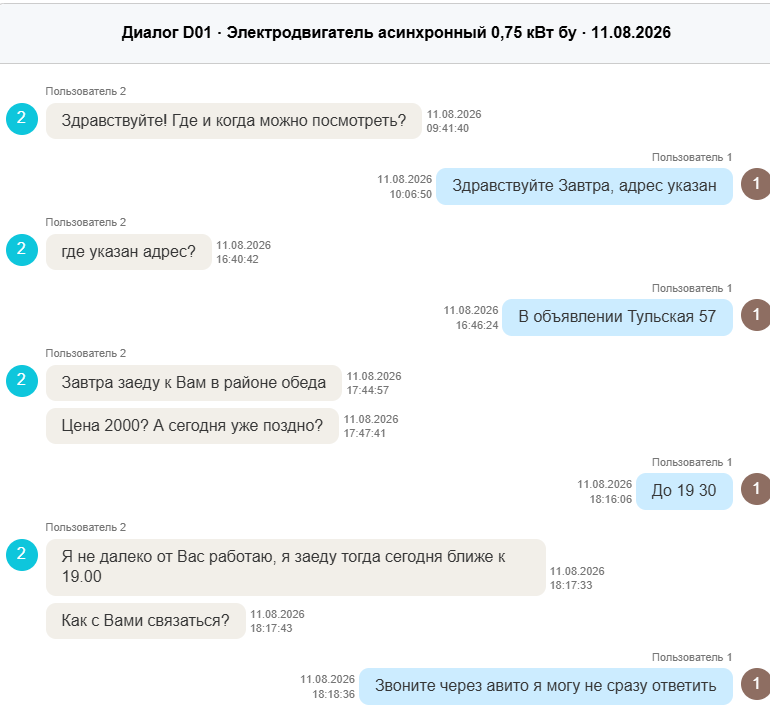

Ошибка №1: Личная встреча ≠ самовывоз
Категория: Корнер-кейс
❌ Как разметили неверно
Асессоры поставили СС02 «Личная встреча» — посчитали, что раз покупатель приезжает к продавцу, то это личная встреча.

💡 Пояснение
На скриншоте покупатель только договаривается приехать. Подтверждения оплаты или получения товара нет. По пункту 2.3 одной договорённости недостаточно.
Здесь нет договорённости о встрече в каком-то удобном для покупателя месте. Всё явное предложение и инициатива приехать на адрес продавца — исходит от покупателя.
Ставим СС03 «Самовывоз» только в «Упомянутые корнеры». «Реализованные корнеры» оставляем пустыми — если к задаче не прилагалась транскрипция звонка, по которой понятно, что пользователи всё-таки встретились.
✅ Правильно
Покупатель сам приезжает на адрес продавца, чтобы забрать товар. Это СС03 «Самовывоз».
- «Упомянутые корнеры» → СС03.
- «Реализованные корнеры» → пусто (если нет транскрипции звонка с подтверждением встречи).